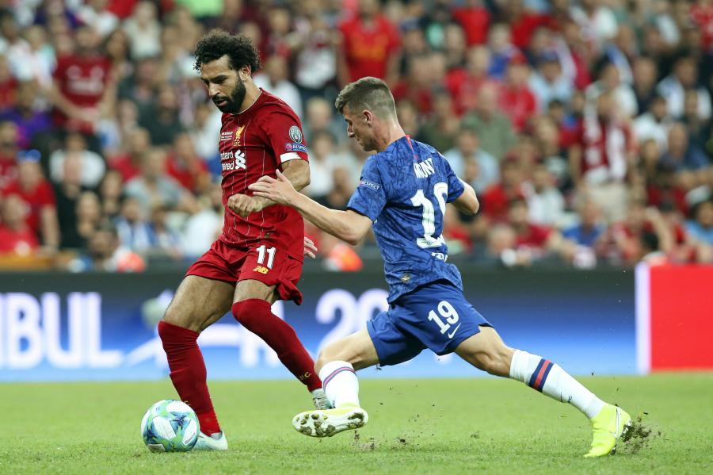

Wcześniejsze turnieje rozgrywane w Europie
20 października 1900, kiedy nie było jeszcze FIFA i UEFA odbył się w Paryżu we Francji pierwszy turniej piłkarski „Piłka nożna na Letnich Igrzyskach Olimpijskich 1900”. Udział w nim wzięły 3 kluby z Europy: Upton Park F.C. z Wielkiej Brytanii, USFSA XI z Francji i Université de Bruxelles z Belgii. O pierwsze miejsce rywalizowały Upton Park F.C. i USFSA XI, jednak to Brytyjczycy wygrali. W meczu o drugie miejsce starli się Francuzi i Belgowie. Po wygranym meczu wicemistrzem został USFSA XI.
